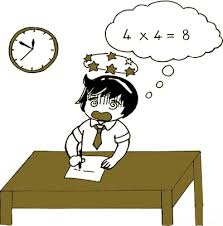

-

Bộ tài liệu chuyên đề Toán 12 và ôn thi THPT Quốc gia 2018
Bộ tài liệu gồm 8 chuyên đề trương ứng với 7 chương của chương trình toán 12 cơ bản và 1 chuyên đề Toán ứng dụng. Bộ tài liệu dược chia làm 3 quyển B, T, N tượng trưng cho 3 miền Bắc - Trung - Nam của đất nước. ....
Xem thêm
-

Tài liệu ôn thi toán lớp 12
Đề cương ôn tập thi học kỳ 2 môn Toán 12 cơ bản dành cho các bạn lớp 12 đang chuẩn bị bước vào kì thi học kì. Tham khảo tài liệu giúp các bạn ôn tập, hệ thống kiến thức và nâng cao kỹ năng giải đề. Chúc các bạn ôn thi hiệu quả! ....
Xem thêm
-

Kĩ thuật casio giải toán trắc nghiệm
Tài liệu được thực hiện bởi Thầy Nguyễn Thế Lực – chuyên gia CASIO bậc thầy trong luyện thi trắc nghiệm các mẹo giải nhanh, thủ thuật toán trắc nghiệm, đây là tài liệu hướng dẫn sử dụng máy tính casio giải nhanh gồm các chuyên đề nguyên hàm, tích phân, lượng giác, số phức, tính đạo hàm, giới hạn, .......
Xem thêm
-

Giải bài tập Toán 12 nâng cao | Để học tốt Toán 12 nâng cao | Giải Toán lớp 12 nâng cao
Để học tốt các môn học lớp 12 nâng cao, bên cạnh các bài Soạn văn lớp 12, VietJack xin trân trọng giới thiệu loạt bài giải bài tập Toán 12 nâng cao được biên soạn bám sát theo nội dung sách giáo khoa Giải Tích 12 nâng cao và Hình Học 12 nâng cao.....
Xem thêm
-
Giải bài tập SGK Toán nâng cao lớp 12 phần Đại số và Giải tích, Hình học
Giải bài tập Giải tích 12 - Nâng cao. Chuyên mục: Toán học. Tác giả: Nguyễn Vũ Thanh. Nhà xuất bản: Đại học Quốc gia Hà Nội. Năm xuất bản: 2009. Giới thiệu: Giải bài tập Giải tích 12 - Nâng cao, được biên soạn theo chương trình SGK hiện hành nhằm giúp các em có tài liệu tham khảo để ôn tập. Sách gồm...
Xem thêm
Góc chia sẻ học tập
-
Mách nhỏ"Bí quyết học siêu hiệu quả."

- 1.Chia thời gian học thành các khung giờ ngắn.
- 2.Có những bài minitest sau mỗi chương học.
- 3.Không gian học tập riêng.
- 4.Khi học không lên dùng điện thoại vì chúng sẽ làm cho bạn mất tập chung dẫn đến hiệu quả học tập không cao.